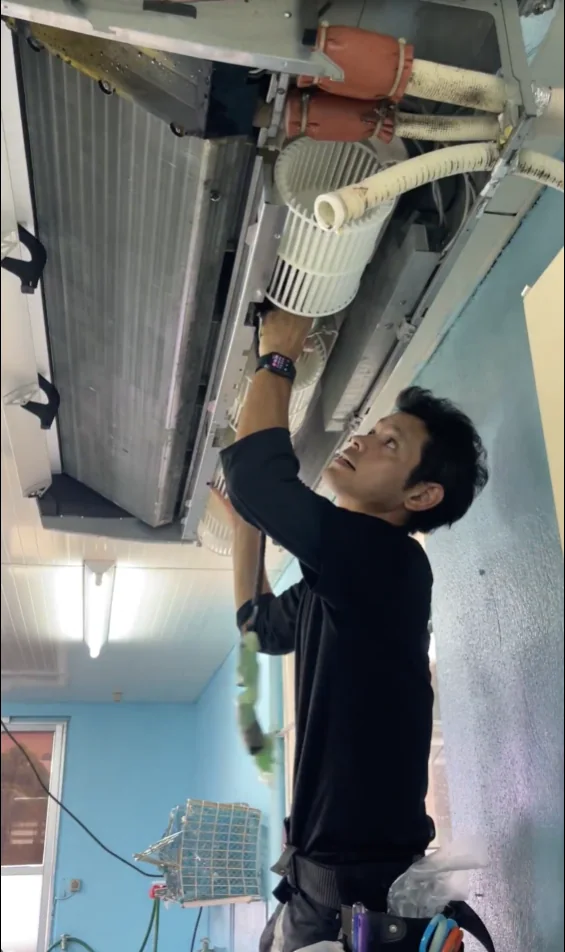
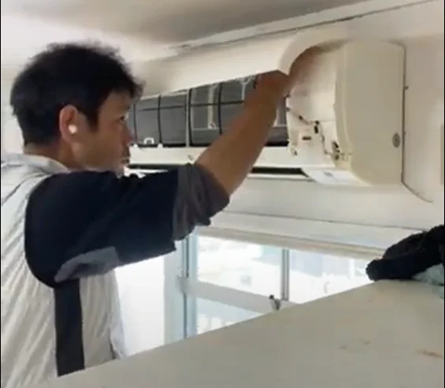

MESSAGE FROM THE REPRESENTATIVE
代表者の想い
必要な人に、
必要なものを、
ちゃんと届ける。
洗うだけでも、売るだけでもない。
その人の暮らしに必要なことを、きちんと考える。

01 ━ 原点
母のために手配した、
一台のエアコン。
私が仕事をするうえで、今も忘れられない出来事があります。
母のために、急いでエアコンを手配し、取り付けたことです。
少しでも快適に過ごしてほしい。最後の親孝行になれば。そんな思いで動きました。
その経験から、私の中でひとつの気持ちが、より強くなりました。
必要な人に、必要なものを、
ちゃんと届けたい。
作業が終われば、それで終わりではない。目の前の人が何に困っていて、何を必要としているのかを考える。BCサービスの仕事の原点は、そこにあります。
02 ━ 現場で培ったこと
きれいにすることも、
取り付けることも。
まずは現場を見ることから。
清掃・現場業務に携わって17年。エアコンクリーニングや分解洗浄、洗濯機、住宅の清掃、家電・設備の相談まで、さまざまな現場を見てきました。
汚れを落とすべきか、修理・交換が必要か。全部を一律に決めつけず、状態や使い方に合わせてお話ししたいと考えています。

03 ━ これからのBCサービス
「どこに頼めばいい？」を、
ひとつ減らしたい。
エアコンの調子が悪い。洗濯機をきれいにしたい。新しい家電に替えたい。設備の修繕を誰に相談すればいいか分からない。
暮らしの困りごとは、ひとつの業種だけで完結しないことがあります。
BCサービスは、清掃やエアコンの仕事を大切にしながら、家電の販売・設置手配、住宅設備の相談にも対応する窓口を目指しています。自分たちで対応できることは責任をもって対応し、専門工事などは内容に応じて協力会社と連携します。
家族が安心して過ごせる毎日を、現場から支える。そのために、これからも一件一件を大切にしていきます。
MORE ABOUT BC SERVICE
サービスについて
清掃から家電・設備のことまで、相談内容に合わせてご案内します。
CONTACT
まずは、困っていることを
聞かせてください。
清掃か、修理か、買替えか。まだ決まっていなくても大丈夫です。内容を確認して、ご案内します。
沖縄県南城市を拠点に、南城市・八重瀬町・南風原町・与那原町・豊見城市・糸満市・那覇市を中心に対応しています。